16
AGO
Cadastro das olimpíadas em 2025
O Portal Olimpíadas Científicas inicia o cadastro das edições das olimpíadas em 2025.
Meninas olímpicas de hoje serão as mulheres nos espaços de decisão do amanhã.
O Movimento Meninas Olímpicas, coordenado pela Profa. Dra. Nara Bigolin (UFSM), tem o objetivo de aumentar a presença das mulheres em espaços estratégicos da sociedade, através do incentivo à participação igualitária das meninas em olimpíadas de conhecimento na área de STEM.
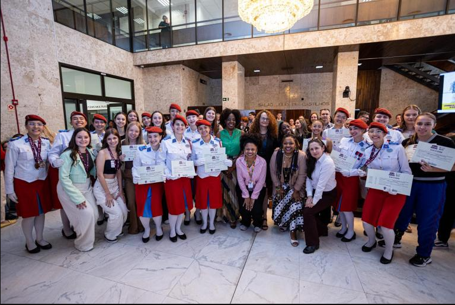
Divulgação, apoio e criação de iniciativas para aumentar a participação feminina em olimpíadas de conhecimento em todo o Brasil.
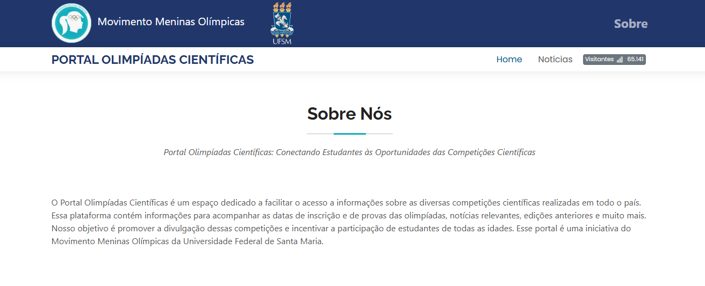
Informações completas sobre as olimpíadas científicas: datas de inscrição, provas, notícias, edições anteriores e muito mais.
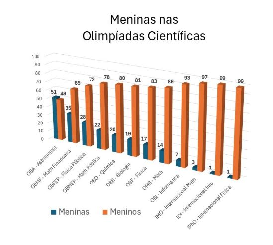
Observatório MMO: pesquisas, mapas e levantamentos sobre a sub-representação feminina em olimpíadas.
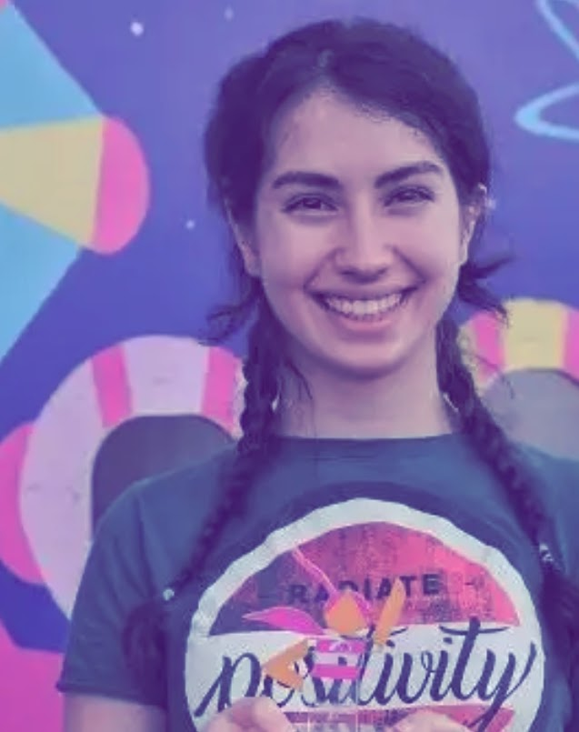
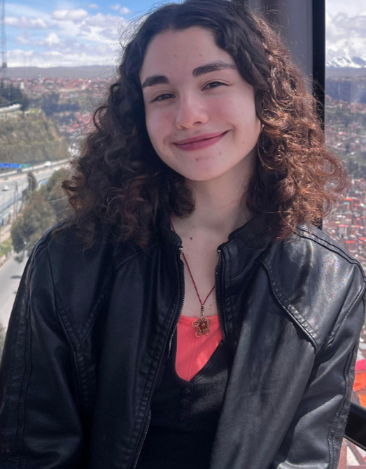
O Movimento Meninas Olímpicas, um ecossistema de olimpíadas científicas sob a coordenação da Profa. Dra. Nara Bigolin, da UFSM, tem o objetivo de aumentar a presença das mulheres em espaços estratégicos, como no meio político, empresarial ou científico da sociedade.
O movimento atua através do incentivo à participação igualitária das meninas na Computação e em olimpíadas de conhecimento nas áreas de STEM.
Foi constatado que o percentual de meninas premiadas em olimpíadas científicas equivale ao percentual de mulheres presentes em espaços de poder e decisão.
O Portal Olimpíadas Científicas inicia o cadastro das edições das olimpíadas em 2025.
Divulgadas as meninas da 3ª e 4ª séries premiadas na Olimpíada Brasileira de Física das Escolas Públicas de 2024.
Meninas participantes das Olimpíadas Internacionais durante o ano de 2024.
Projetos, eventos, premiações e iniciativas apoiadas pelo Movimento Meninas Olímpicas.
Incentivo à participação feminina em olimpíadas científicas nas áreas de STEM através do Instagram, Facebook, YouTube, TikTok e LinkedIn.
Divulgação e popularização das olimpíadas científicas na Educação Básica pública do Brasil, conectando estudantes às oportunidades das competições.
Proposição do Prêmio Meninas Olímpicas, concedido pela Prefeitura Municipal de Santa Maria e divulgado pela imprensa local.
Participação na 77ª Reunião Anual da Sociedade Brasileira para o Progresso da Ciência.
Proposição de um espaço específico para olimpíadas científicas no 1º Encontro das Olimpíadas Científicas, durante a 32ª SBPC Jovem.
Participação na comissão organizadora do 1º SBPC Mulher.
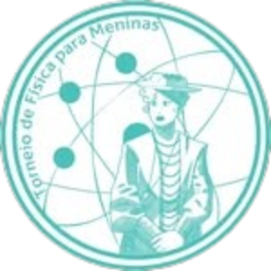
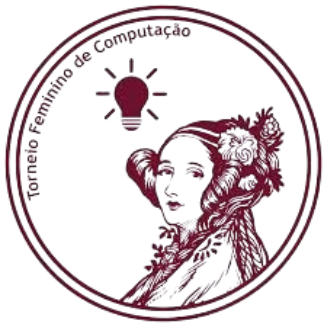
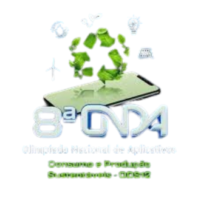
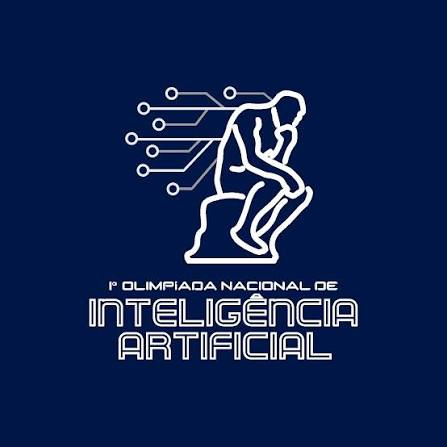
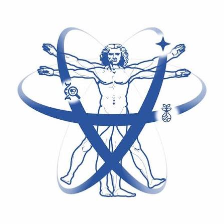
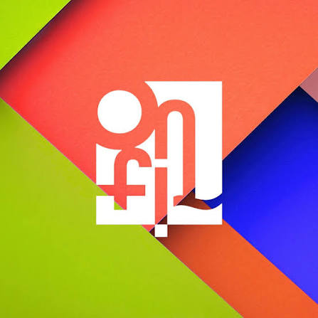
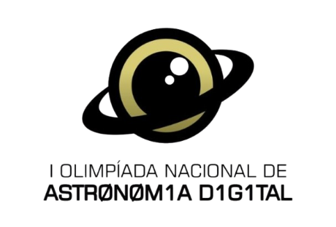
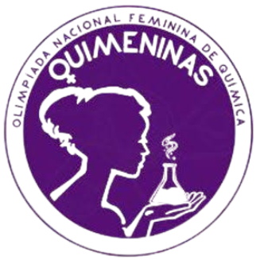
Proposição de prêmios para meninas em olimpíadas nacionais, internacionais e em órgãos do Poder Legislativo.
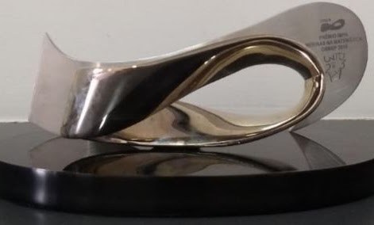
Desenvolvimento de iniciativas voltadas ao reconhecimento e ao estudo da participação feminina.
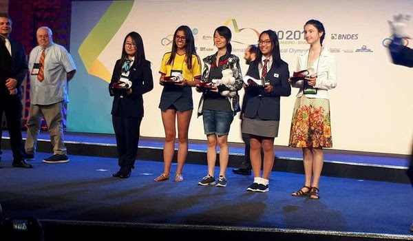
Criação de competições nacionais voltadas à participação de meninas em áreas científicas.
Incentivo à participação brasileira em olimpíadas internacionais femininas.
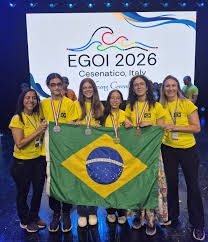
Criação e organização de encontros, workshops, painéis e mesas-redondas sobre olimpíadas científicas.
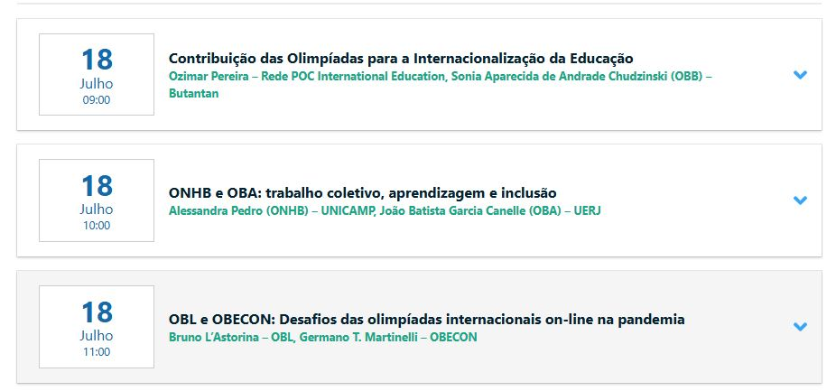
Universidades brasileiras criaram projetos de extensão inspirados no Movimento Meninas Olímpicas.
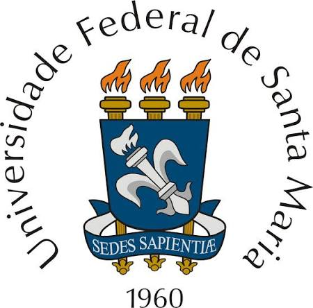